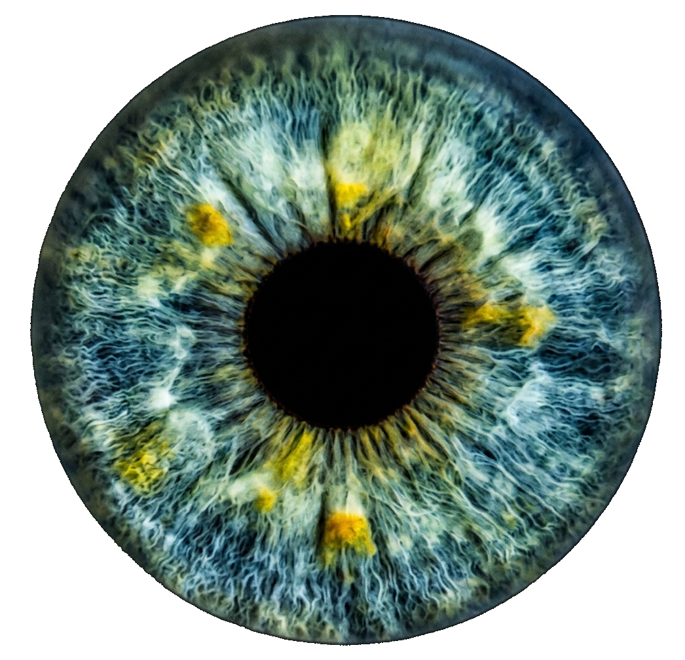
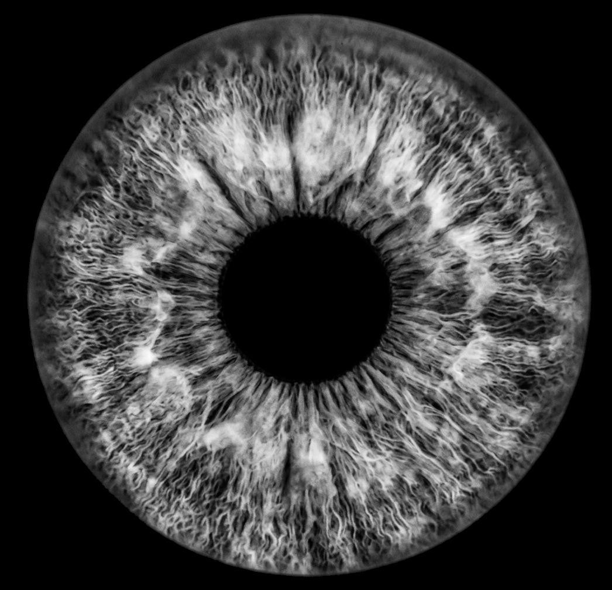
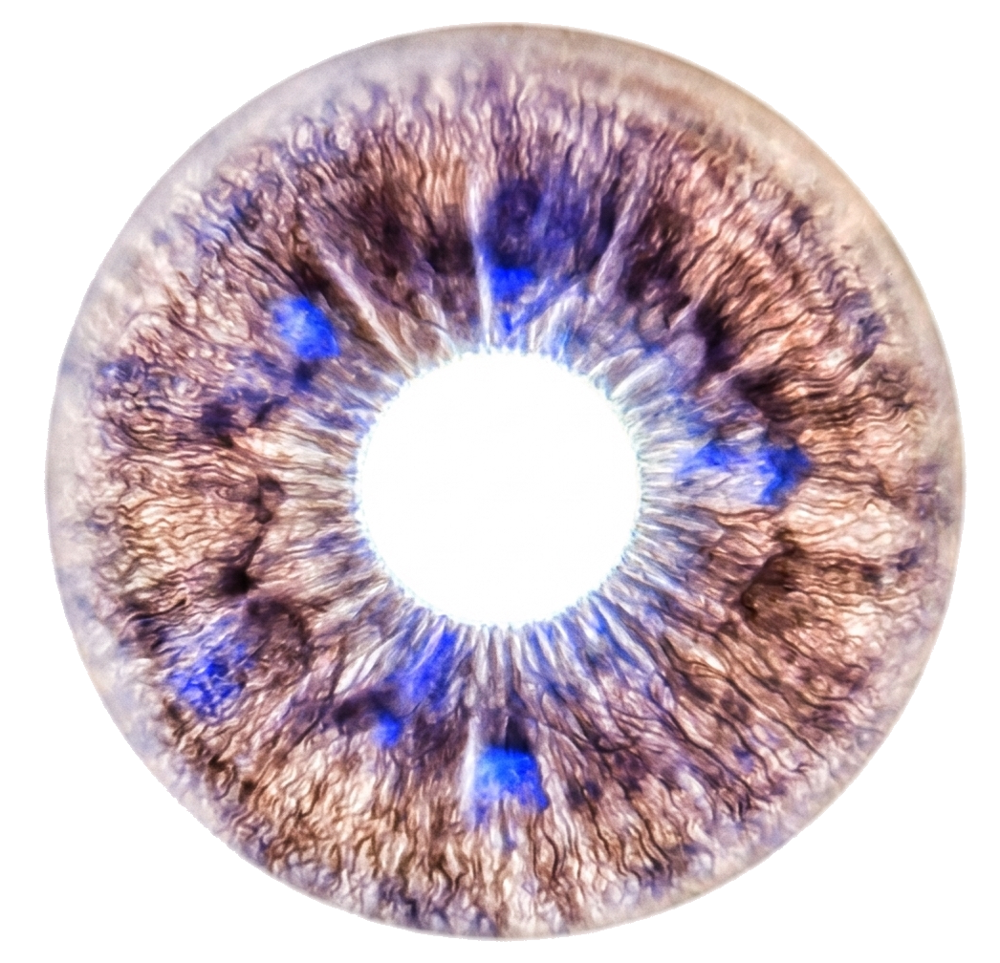
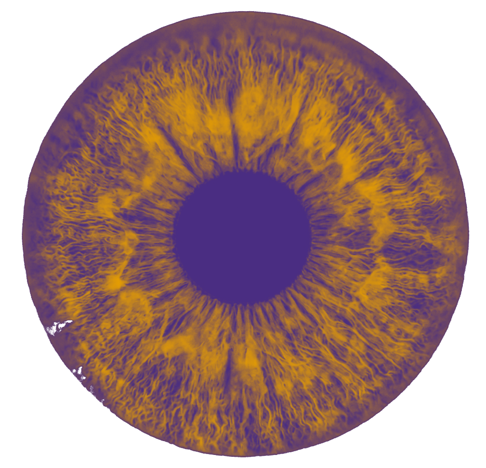
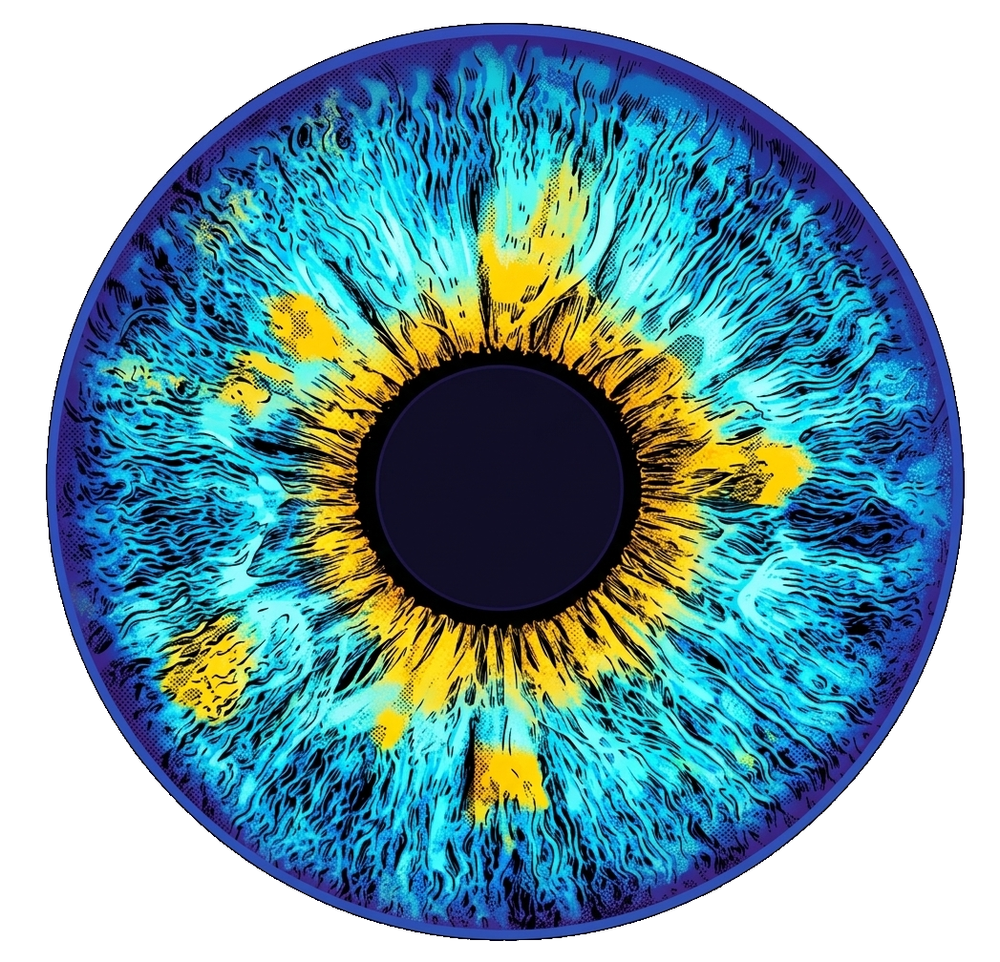

00 — Intentions du projet
Deux disciplines,
un même regard
SNT — Numérique
La technique du regard
Comprendre qu'une image n'est qu'une grille de nombres. Apprendre à lire, modifier et analyser ces nombres avec Python. Mesurer ce que la machine "voit" là où l'œil humain perçoit de la beauté ou de l'identité.
Français — Expression
La puissance du regard
Écrire sur soi à partir d'une image de soi. Travailler la confiance en soi par le détour de l'intime — l'iris, fragment du visage invisible au quotidien, révélateur d'une présence unique au monde.
Transversal — Éthique
Les enjeux du regard
Comprendre que cet iris est une donnée biométrique protégée par le RGPD. Questionner la surveillance, le consentement, ce qu'on accepte de montrer de soi et pourquoi — en ligne comme dans l'espace public.
Finalité — Exposition
Partager son regard
Aboutir à une exposition double — physique dans le lycée et galerie web — mêlant les iris traités par Python et les textes rédigés en français. Chaque élève, auteur et artiste de sa propre image.
01 — Démonstration enseignant
Un iris,
cinq regards
Cinq traitements Python appliqués au même iris — de l'original brut au filtre entièrement conçu par l'élève. Cette galerie sert de démonstration en classe pour montrer ce que le projet produira. l'iris exemple est celle de la femme de l'enseignant de NSI, Nathalie — un grand merci à elle pour sa contribution artistique et son courage à exposer son regard au monde ! Réalisation depuis une photo prise avec un honor magic V5 en mode macro, puis recadrée à l'aide de Gemini. Les cinq images sont disponibles dans le dépôt GitHub du projet, prêtes à être utilisées comme modèles ou comme iris libres de droits.

Placer ici
la photo
originale
Original
Photo brute, nettoyée des métadonnées EXIF — telle que capturée

Placer ici
la photo
niveaux de gris
Niveaux de gris
L = 0.299·R + 0.587·V + 0.114·B appliqué pixel par pixel

Placer ici
la photo
négatif
Négatif
Chaque canal inversé : (255-R, 255-V, 255-B) — l'invisible révélé

Placer ici
la photo
filtre cosmique
Filtre cosmique
Palette violet→ambre mappée sur la luminosité — une nébuleuse dans l'œil

Placer ici
votre filtre
personnel
Filtre personnel
Filtre inventé librement — l'élève choisit sa transformation
02 — Progression pédagogique
8 séances,
deux voix
Activités
- Prise de photo de l'iris (smartphone + mode macro)
- Zoom extrême : observation des pixels dans GIMP ou Paint
- Relevé des valeurs RVB d'un pixel choisi
- Comparaison formats JPEG vs PNG, poids du fichier
Notions clés
- Pixel, résolution, dimension
- Codage couleur RVB (triplet 0-255)
- Compression et métadonnées EXIF
- Poids = largeur x hauteur x 3 octets (non compressé)
Activités
- Chaque élève observe sa photo d'iris imprimée en grand format
- Exercice d'écriture libre : "Ce que je vois dans cet oeil que je ne savais pas"
- Lecture à haute voix volontaire — écoute bienveillante du groupe
- Introduction aux textes du corpus littéraire
Objectifs confiance en soi
- Prendre la parole sur quelque chose d'intime sans être jugé
- Valoriser sa singularité : aucun iris ne ressemble à un autre
- Construire une image positive de soi par l'écriture
- Apprendre à recevoir et formuler un retour positif
« Vos yeux sont si profonds qu'en me penchant pour boire
j'ai vu tous les soleils y venir se mirer. »
Activités
- Ouverture de l'iris avec Pillow —
Image.open().convert("RGB") - Lecture d'un pixel avec
getpixel() - Double boucle sur les pixels, compteur de pixels "chauds"
- Exercice : trouver les coordonnées du pixel le plus lumineux
Notions clés
- Import de bibliothèque, objet Image
- Tuples, déstructuration (r, g, b)
- Double boucle for imbriquée
.convert("RGB")— gestion du canal alpha (PNG)
from PIL import Image
# Toujours convertir en RGB pour eviter l'erreur "too many values"
img = Image.open("mon_iris.png").convert("RGB")
largeur, hauteur = img.size
print(f"Dimensions : {largeur} x {hauteur} pixels")
# Lire le pixel central
cx, cy = largeur // 2, hauteur // 2
r, g, b = img.getpixel((cx, cy))
print(f"Pixel central : R={r}, V={g}, B={b}")
# Trouver le pixel le plus lumineux
max_L, pos = 0, (0, 0)
for x in range(largeur):
for y in range(hauteur):
r, g, b = img.getpixel((x, y))
L = int(0.299*r + 0.587*g + 0.114*b)
if L > max_L:
max_L, pos = L, (x, y)
print(f"Pixel le plus lumineux : {pos}, L={max_L}")
Activités
- Niveaux de gris : formule de luminance
- Négatif : inversion des canaux
- Filtre cosmique : mapping sur palette violet-ambre
- Défi créatif : inventer son propre filtre pour l'expo
Notions clés
putpixel()pour modifier pixel par pixel- Fonctions Python : def, paramètres, return
- Interpolation linéaire entre deux couleurs
- Sauvegarde :
.save()
from PIL import Image
def niveaux_de_gris(img):
"""Convertit une image en niveaux de gris."""
resultat = Image.new("RGB", img.size)
for x in range(img.size[0]):
for y in range(img.size[1]):
r, g, b = img.getpixel((x, y))
L = int(0.299*r + 0.587*g + 0.114*b)
resultat.putpixel((x, y), (L, L, L))
return resultat
def negatif(img):
"""Inverse les couleurs de l'image."""
resultat = Image.new("RGB", img.size)
for x in range(img.size[0]):
for y in range(img.size[1]):
r, g, b = img.getpixel((x, y))
resultat.putpixel((x, y), (255-r, 255-g, 255-b))
return resultat
def filtre_cosmique(img):
"""Mappe la luminosite sur une palette violet-ambre."""
resultat = Image.new("RGB", img.size)
for x in range(img.size[0]):
for y in range(img.size[1]):
r, g, b = img.getpixel((x, y))
L = int(0.299*r + 0.587*g + 0.114*b)
t = L / 255
nr = int(74 + t*(232-74))
ng = int(45 + t*(160-45))
nb_val = int(130 * (1-t))
resultat.putpixel((x, y), (nr, ng, nb_val))
return resultat
# Application et sauvegarde
img = Image.open("mon_iris.png").convert("RGB")
niveaux_de_gris(img).save("iris_gris.png")
negatif(img).save("iris_negatif.png")
filtre_cosmique(img).save("iris_cosmique.png")
Volet SNT — Données & EXIF
- Lecture et suppression des métadonnées EXIF avec Python
- Analyse des CGU Instagram / TikTok (extraits simplifiés)
- Débat : peut-on partager son iris sur les réseaux ?
- Rédaction collective d'une charte éthique de l'exposition
Volet Français — Confiance & identité
- Lecture d'extraits littéraires sur le regard et l'identité
- Exercice : rédiger le "cartel de soi" — 5 lignes pour l'expo
- Travail sur la reformulation positive
- Partage en binôme — retour bienveillant du partenaire
from PIL import Image
from PIL.ExifTags import TAGS
import io
def lire_exif(chemin):
"""Affiche toutes les metadonnees EXIF d'une image."""
img = Image.open(chemin)
exif_data = img._getexif()
if not exif_data:
print("Aucune metadonnee EXIF trouvee.")
return
for tag_id, valeur in exif_data.items():
tag = TAGS.get(tag_id, tag_id)
print(f" {tag:25s} : {valeur}")
def supprimer_exif(chemin_entree, chemin_sortie):
"""Cree une copie de l'image sans aucune metadonnee."""
img = Image.open(chemin_entree).convert("RGB")
buffer = io.BytesIO()
img_propre = Image.new(img.mode, img.size)
img_propre.putdata(list(img.getdata()))
img_propre.save(buffer, format="JPEG", quality=95)
with open(chemin_sortie, "wb") as f:
f.write(buffer.getvalue())
print(f"Image nettoyee sauvegardee : {chemin_sortie}")
# Utilisation
lire_exif("mon_iris.jpg")
supprimer_exif("mon_iris.jpg", "iris_sans_exif.jpg")
Activités
- Calcul des moyennes RVB de l'iris entier
- Histogramme de luminosité avec matplotlib
- Algorithme de détection de la couleur dominante
- Génération d'une "empreinte chromatique" de l'iris
Notions clés
- Moyenne, distribution, fréquence
- Listes et accumulation
- Classification par seuils
- Représentation graphique (matplotlib)
from PIL import Image
import matplotlib.pyplot as plt
def analyser_iris(chemin):
img = Image.open(chemin).convert("RGB")
pixels = list(img.getdata())
# Moyennes RVB
moy_r = sum(p[0] for p in pixels) / len(pixels)
moy_g = sum(p[1] for p in pixels) / len(pixels)
moy_b = sum(p[2] for p in pixels) / len(pixels)
# Histogramme des luminosites
histo = [0] * 256
for p in pixels:
L = int(0.299*p[0] + 0.587*p[1] + 0.114*p[2])
histo[L] += 1
# Couleur dominante
if moy_b > moy_r and moy_b > moy_g:
couleur = "bleu"
elif moy_g > moy_r:
couleur = "vert"
elif moy_r > 120:
couleur = "marron / noisette"
else:
couleur = "sombre"
print(f"Couleur dominante : {couleur}")
print(f"Moyenne RVB : ({moy_r:.1f}, {moy_g:.1f}, {moy_b:.1f})")
# Affichage de l'histogramme
plt.figure(figsize=(10, 4))
plt.bar(range(256), histo, color="#7b52c4", alpha=0.8, width=1)
plt.title(f"Distribution des luminosites — iris {couleur}")
plt.xlabel("Luminosite (0=noir, 255=blanc)")
plt.ylabel("Nombre de pixels")
plt.savefig("histogramme_iris.png", dpi=150)
plt.show()
analyser_iris("mon_iris.png")
Activités
- Rédaction du texte final d'exposition (15-20 lignes)
- Mise en forme soignée : titre choisi par l'élève
- Relecture croisée en binôme — corrections bienveillantes
- Sélection du filtre Python qui accompagnera le texte
Objectifs confiance en soi
- Oser affirmer une vision de soi positive et singulière
- Choisir ce qu'on montre — exercice de l'autonomie
- Ressentir la fierté d'un travail abouti
- Prendre conscience que ses mots ont de la valeur
Production numérique (SNT)
- Génération de la galerie web par script Python
- Mise en ligne sur réseau interne lycée
- Vérification : aucune métadonnée EXIF dans les fichiers publiés
Production physique (Français)
- Impression A3 : iris traité + texte d'exposition
- Cartels rédigés par chaque élève
- Panneau collectif "Nos iris en chiffres"
- Vernissage ouvert aux autres classes et familles
import os, base64
def generer_galerie(dossier_iris, fichier_sortie="galerie.html"):
"""Genere une galerie HTML a partir des images traitees."""
iris_list = [f for f in os.listdir(dossier_iris) if f.endswith(".png")]
cartes = ""
for nom_fichier in iris_list:
chemin = os.path.join(dossier_iris, nom_fichier)
with open(chemin, "rb") as f:
b64 = base64.b64encode(f.read()).decode()
prenom = nom_fichier.replace("_", " ").replace(".png", "")
cartes += f"""
<div class="carte">
<img src="data:image/png;base64,{b64}" alt="Iris de {prenom}">
<div class="cartel"><strong>{prenom}</strong></div>
</div>"""
html = f"""<!DOCTYPE html>
<html lang="fr"><head><meta charset="UTF-8">
<title>Exposition IRIS</title>
<style>body{{background:#0a0a0f;color:#f5f2ee;font-family:sans-serif;}}
h1{{text-align:center;padding:2rem;font-size:3rem;}}
.galerie{{display:flex;flex-wrap:wrap;gap:1rem;justify-content:center;padding:2rem;}}
.carte{{width:220px;border:1px solid #4a2d82;border-radius:12px;overflow:hidden;}}
.carte img{{width:100%;display:block;}}
.cartel{{padding:0.8rem;text-align:center;background:#1a0a3a;}}</style>
</head><body>
<h1>Exposition IRIS</h1>
<div class="galerie">{cartes}</div>
</body></html>"""
with open(fichier_sortie, "w", encoding="utf-8") as f:
f.write(html)
print(f"Galerie generee : {fichier_sortie}")
generer_galerie("iris_traites/")
L'IA apprend à voir
- Accroche
- Teachable Machine
- Python · scikit-learn
- Bilan éthique
Le programme
- Comment une IA apprend à classer
- Sans code, le modèle se construite
- Ouvrir le capot, coder le même modèle
- Teachable Machine vs Python — face à face
- Cinq questions qui dérangent
- Ce qu'on évalue
03 — Corpus littéraire
Des mots pour
voir autrement
Ces textes servent de points d'appui pour l'écriture de soi. L'enseignant·e de français choisit un ou plusieurs extraits selon la progression souhaitée.
Louis Aragon — 1942
Les Yeux d'Elsa
« Vos yeux sont si profonds qu'en me penchant pour boire
j'ai vu tous les soleils y venir se mirer. »
Usage → Point d'entrée sur la profondeur symbolique du regard. Déclencheur d'écriture : "Que voit-on quand on plonge dans son propre iris ?"
Rainer Maria Rilke — 1929
Lettres à un jeune poète
« Il n'est qu'une seule chose nécessaire : la solitude, la grande solitude intérieure. Aller en soi-même et ne rencontrer pendant des heures personne — c'est à cela qu'il faut parvenir. »
Usage → Séance 2. Réflexion sur l'introspection. L'iris comme invitation à "aller en soi-même".
Annie Ernaux — 2022
Les Années (extrait adapté)
« Elle cherche dans le miroir ce qui dure, ce qui traverse les années, quelque chose que les photos ne montrent pas et que le temps n'efface pas. »
Usage → Séance 7. Écriture du texte final. Lien entre image figée et identité en mouvement. Accessible et puissant pour les secondes.
Jean-Paul Sartre — 1943
L'Être et le Néant (extrait simplifié)
« Le regard d'autrui me révèle à moi-même. Je ne me vois jamais me voir. C'est toujours l'autre qui me voit en premier. »
Usage → Débat séance 5. Lien avec la biométrie et la reconnaissance automatique : qui nous "voit" vraiment ?
Colette — 1900
Claudine à l'école (extrait)
« J'ai des yeux changeants, dit-on. Ils sont verts le matin, gris le soir, et noirs quand je suis en colère. Moi je les trouve simplement honnêtes. »
Usage → Séance 2. Légèreté et humour. Décomplexe la parole sur soi. Idéal pour débuter l'écriture de soi avec les élèves intimidés.
Victor Hugo — 1835
Les Contemplations — Regard
« L'œil était dans la tombe et regardait Caïn. »
Usage → Séance 5 (volet RGPD). La métaphore du regard omniscient — pont entre littérature et surveillance numérique. Une seule ligne, un débat entier.
04 — Volet français & développement personnel
Progresser,
s'affirmer
Le détour par la technique (photographier, traiter, analyser) libère la parole sur soi. L'iris devient un tiers — ni miroir direct ni fiction — qui permet d'aborder l'identité sans la frontalité anxiogène du "parle-moi de toi".
Le détour technique comme libération
Parler de son iris en termes de pixels, de valeurs RVB, de filtres Python — c'est parler de soi sans le dire directement. Cette distance est précieuse pour les élèves qui craignent l'exposition personnelle. La machine "dépersonnalise" assez pour permettre ensuite la réappropriation par l'écriture.
La singularité prouvée par les données
Quand l'analyse Python révèle que chaque iris a une empreinte chromatique unique — des moyennes RVB que personne d'autre dans la classe ne partage exactement — la singularité de l'élève est prouvée mathématiquement. Ce n'est plus une opinion, c'est un fait mesurable. Puissant pour la confiance en soi.
Choisir ce qu'on montre
Chaque élève choisit quel filtre Python accompagnera son texte à l'exposition. Ce pouvoir de choix — décider de l'image qu'on donne de soi — est un exercice concret d'autonomie et d'affirmation de soi, rare à cet âge dans le cadre scolaire.
L'exposition comme accomplissement
Voir son travail affiché dans l'établissement, lu et regardé par d'autres, produit un sentiment de fierté légitime. L'exposition physique ancre l'accomplissement dans le réel — plus durable qu'une note sur une copie. Le vernissage est un moment de reconnaissance sociale par les pairs et les adultes.
La relecture bienveillante
Les exercices de relecture croisée en binôme (séances 2 et 7) entraînent à recevoir un regard positif sur son travail et à en formuler un à son tour. Compétence sociale fondamentale, souvent peu développée à cet âge, qui renforce la confiance mutuelle dans le groupe-classe.
Le titre comme acte d'auteur
Donner un titre à son texte d'exposition — et donc à l'ensemble de sa production — est un acte d'auteur. L'élève ne produit plus un "devoir" mais une œuvre. Cette bascule symbolique est l'un des effets les plus durables du projet sur l'estime de soi scolaire.
05 — Repères éthiques & RGPD
Ce qu'on montre,
ce qu'on protège
Données biométriques
L'iris est une donnée biométrique au sens de l'article 9 du RGPD. Son traitement est interdit par défaut sans consentement explicite et sans finalité documentée. Toute publication externe nécessite une procédure formelle.
EXIF & géolocalisation
Une photo de smartphone contient souvent les coordonnées GPS du lieu de prise. Le script de suppression EXIF (séance 5) est obligatoire avant toute publication — même sur le réseau interne du lycée.
Cadre du projet
Consentement écrit, finalité pédagogique documentée, images conservées uniquement sur le réseau interne, droit de retrait à tout moment sans justification. Alternative avec iris libres de droits pour tout élève qui le souhaite.
Reconnaissance & biais algorithmiques
Les systèmes de reconnaissance irienne ont des taux d'erreur variables selon l'éclairage et la morphologie. Aucun algorithme n'est neutre. La question de la responsabilité en cas d'erreur est un débat démocratique ouvert.
Réseaux sociaux
Poster son iris sur Instagram transfère une licence d'utilisation à Meta. La plateforme peut utiliser cette image pour entraîner des algorithmes de reconnaissance. La charte éthique collective (séance 5) formalise cet engagement.
Surveillance de masse
Plusieurs États ont déployé des systèmes de reconnaissance irienne dans les espaces publics. L'équilibre entre sécurité et vie privée est un débat démocratique que ce projet prépare les élèves à tenir de façon éclairée.
06 — Finalité du projet
L'exposition,
double forme
Exposition physique
- Tirage A3 : iris traité par Python + texte d'exposition rédigé en français
- Cartel élève : prénom (ou pseudonyme), titre de l'œuvre, filtre utilisé, valeurs RVB moyennes
- Panneau collectif "Nos iris en chiffres" — histogramme et stats de la classe
- Panneau éthique — la charte rédigée collectivement séance 5
- QR code renvoyant vers la galerie web
- Affichage hall ou CDI — 2 semaines minimum — vernissage ouvert
Galerie numérique
- Page HTML générée automatiquement par le script Python de la séance 8
- Chaque iris → carte avec image traitée, texte d'exposition, cartel
- Page "La couleur de notre classe" — camembert des couleurs d'iris détectées
- Section "Le projet" — déroulé pédagogique et outils utilisés
- Section "Notre charte éthique" — engagement collectif formalisé
- Hébergement réseau interne lycée (recommandé) — aucune image EXIF publiée
07 — Évaluation
Grille
sur 20 points
| Critère | Discipline | Descripteur | Points |
|---|---|---|---|
| Compréhension pixel / RVB | SNT | Sait expliquer pixel, triplet RVB, résolution, poids d'une image | 3 pts |
| Script lecture & filtres | SNT | Programme fonctionnel avec au moins un filtre original structuré en fonctions | 5 pts |
| Analyse EXIF | SNT | Lecture et suppression des métadonnées, compréhension des enjeux de confidentialité | 2 pts |
| Texte d'exposition | Français | Texte personnel de 15–20 lignes, soigné, titré, qui dit quelque chose de singulier | 4 pts |
| Réflexion éthique | Transversal | Contribution argumentée à la charte, pertinence du débat séance 5 | 3 pts |
| Production exposition | Transversal | Cohérence visuelle iris/texte, soin du cartel, engagement dans le vernissage | 3 pts |